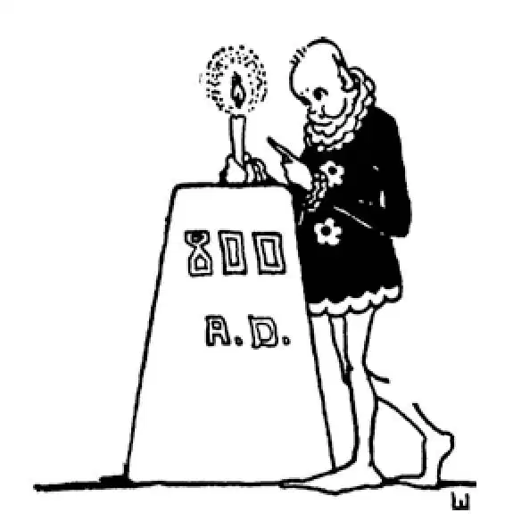

47
Two Empires, Two Emperors
两个帝国，两个皇帝

FEUROPE had been in the dark for three hundred years. You know what I mean. There were not enough educated people to make it bright.
The Arabs were bright, but they were not in Europe.
In 800 there was a man—a king—who by his might and power was able to join the pieces of Europe together once again to form a new Roman Empire. He was not a Roman, however, but a Frank. Franks, you remember, were one of the Germanic tribes that ruled Europe after the end of the Roman Empire. This king of the Franks was named Charles. He was a grandson of the Charles the Hammer who had stopped the Muslims at Tours, and he was called by the French name Charlemagne, which means Charles the Great.
Charlemagne at first was king of France alone, but he was not satisfied to be king of that country only. He soon conquered the countries on each side of him, parts of Spain and Germany. He built his capital in a place in Germany called Aachen, or Aix-la-Chapelle in French. At Aix-la-Chapelle there were warm springs which made fine baths, and Charlemagne was very fond of bathing and was a fine swimmer.
A large part of Italy was then ruled over by the pope. But the pope was having a good deal of trouble with some tribes in the north of Italy, and he asked Charlemagne if he wouldn't come down and conquer them. Charlemagne was quite ready and willing to help the pope, so he went over into Italy and easily settled those troublesome tribes. The pope was grateful to Charlemagne for this and wished to reward him.
Now, Christians everywhere used to make trips to Rome in order to pray at the great Church of St. Peter, which had been built over the spot where St. Peter had been crucified. Well, at Christmas time in the Year 800 Charlemagne paid such a visit to Rome. On Christmas day he went to the Church of St. Peter and was praying at the altar when the pope came forward and put a crown on his head. The pope then hailed him Emperor , and as the pope at that time could make kings and emperors, Charlemagne became emperor of Italy added to the other countries over which he already ruled. Charlemagne's empire was now like a new but smaller Roman Empire, but with this big difference: it was ruled over not by a Roman, but by a Frank.
In those days, few people had any education, and hardly anyone could read or write. Charlemagne wanted an education. He was so anxious to know everything there was to be known. He wanted to be able to do everything anyone could do, but there was no one in his own country who knew enough or was able to teach him. In England, however, there was a very learned monk named Alcuin. He knew more than anyone else in Northern Europe, so Charlemagne invited Alcuin to come over from England and teach him and his people. Alcuin taught both Christian literature and also some Latin and Greek writings that had survived the years of warfare in Europe.
Charlemagne learned all these things very easily, but when it came to the simple matter of learning to write he found this very hard. He did learn to read, but he seemed unable to learn to write. It is said that he slept with his writing pad under his pillow and practiced whenever he awoke. Yet he never learned to write much more than his name. He did not begin to study until he was a grown man, but he kept on studying all the rest of his life. To make sure that others would have the opportunity he missed, Charlemagne ordered every monastery in his kingdom to open a school. He also opened a school right in his own palace. Why do you suppose he did that?
In spite of the fact that Charlemagne's daughters were princesses, he had them taught how to weave and sew and make clothes and cook just as if they had to earn their own living. Although Charlemagne was such a rich and powerful monarch and could have everything he wanted, he preferred to eat plain food and dress in plain clothes. He did not like all the finery that those about him loved. One day, just to make his nobles see how ridiculously dressed they were in silks and satins, he took them out hunting in the woods while a storm was going on, so that he could laugh at them. You can imagine how their silk and satin robes looked after being soaked with rain, covered with mud, and torn by briers.
Although his tastes were simple in matters of dress, he made his home a magnificent palace. He furnished it with gold and silver tables and chairs and other gorgeous furniture. He built in it swimming pools and a wonderful library and a theater and surrounded it with beautiful gardens.
At this time and all through the Dark Ages people had a strange way of finding out whether a person had stolen or committed a murder or any other crime. The person suspected was not taken into court and tried before a judge and a jury to see whether he was telling the truth and had done the thing or not. Instead he was made to carry a redhot iron for ten steps, or to dip his arm into boiling water, or to walk over red-hot coals. If he were not guilty, it was thought no harm would come to him, or if he was burned, it was thought that the bum would heal right away. This was called trial by ordeal . It probably started from the story told in the Bible of Shadrach, Meshech, and Abednego, who, you remember, in the time of Nebuchadnezzar, had walked through the fiery furnace unharmed because they had done no wrong. Though Charlemagne was so intelligent, he believed in the trial by ordeal. Today we have no such cruel and unfair way of finding out whether one is guilty or not. Yet we say of a person who has a lot of trouble that seems to be a test of his character, “He is going through an ordeal.”
While Charlemagne was living, there was a caliph in far-off Baghdad named Harun, which is the Arabic spelling of Aaron. You may have heard of him if you have read any of the Arabian Nights , for the stories of the Arabian Nights were written at this time, and Harun is described in them. Although Harun was a Muslim, not a Christian, and though he was ruler of an empire that fought the Christians, nevertheless he admired Charlemagne very much. To show how much he thought of him, he sent him valuable presents—among other things, a clock which struck the hours, which you remember, was an invention of the Arabs. This was a great curiosity, for there were then no clocks in Europe. People had to tell time by the shadow the sun cast on a sundial, or else by the amount of water or sand that dripped or ran out from one jar to another. He also sent Charlemagne an elephant, which was a great curiosity at the court of the Frankish king.
Harun was a very wise and good ruler over the Muslims, and that is why he came to be called al-Rashid , which means the Just . Do you remember what Greek was also called the Just ? Harun used to disguise himself as a workman and go about among his people. He would talk with those he met along the street and in the market place, trying to find out how they felt about his government and about things in general. He found they would talk freely to him when he was dressed in old clothes, for then they did not know who he was but thought him a fellow workman. In this way, Harun learned a great deal about his people's troubles and what they liked or didn't like about his rule. He then would go back to his palace and give orders to have rules and laws made to correct anything that seemed wrong or unjust.
After Charlemagne died there was no one great enough or strong enough to hold the new Roman Empire together, and once again it broke up into small pieces; and, “All the king's horses and all the king's men could not put it together again.”
【中文阅读】
欧洲“在黑暗之中”过了三百年，你明白我的意思吧。那个时期受过良好教育的人太少，还不足以让欧洲摆脱黑暗。
阿拉伯人是有智慧的，但是他们不在欧洲。
在公元800年，有一个人——一个国王——他凭借自己的势力和权力把四分五裂的欧洲重新统一起来，形成一个新的罗马帝国。不过，这个人并不是罗马人，而是法兰克人。你记得吧，法兰克人是在罗马帝国终结之后统治了欧洲的日耳曼部落的一个分支。这位法兰克人国王名叫查理，他就是“铁锤查理”的孙子，“铁锤查理”曾在图尔抵挡住了穆斯林的进攻。查理的法语名字叫查理曼，意思是“查理大帝”。
查理曼最初只是法国的国王，但他并不满足只做这个国家的国王。不久，他就征服了他南北两侧的国家，西班牙和德国的一些地方，把自己的都城建在了德国一个叫亚琛的地方，法语称艾克斯拉沙佩勒。亚琛这个地方有温泉，形成了完美的温泉浴场，查理曼很喜欢游泳，况且他游泳也游得很好。
那时，意大利的大部分地区由教皇管理。但是意大利北部的一些部落很不安分，给教皇造成了很大的麻烦。于是他就问查理曼是否愿意南下去征服这些部落。查理曼十分爽快，表示愿意帮教皇这个忙，于是，他越过边界进入意大利，轻而易举地解决了这些令人烦恼的部落。教皇为此对查理曼非常感激，想要回报他。
对了，过去各地的基督徒常旅行到罗马去，为的是能在圣彼得大教堂祈祷。圣彼得大教堂就建在圣彼得受难的地方。那么，在公元800年圣诞节期间，查理曼也为此到了罗马。在圣诞节那天，他去了圣彼得大教堂，正当在他祭坛前祈祷的时候，教皇走上前，给他戴上了一顶王冠。接着，教皇高呼他为“皇帝”，由于教皇那个时候是可以任命国王和皇帝的，所以，除了他已经统治的其他国家，查理曼此时又成了意大利的皇帝。现在，查理曼的帝国就像一个新的、但是小一点的罗马帝国，不过有个很大的区别：它是由法国人统治的，而不是罗马人。
在那个时代，没有什么人受过教育，几乎没有人会读书写字。查理曼缺乏教育。他非常渴望学到一切现有的知识。他还希望凡是别人能做到的事，自己也能做到，但是在他自己的国家，没有人具备这么多的知识和能力做他的老师。不过，在英格兰，有个非常博学的教士名叫阿尔昆，他比北欧的任何人都有学问。于是，查理曼邀请他从英格兰过来教育他和他的国民。阿尔昆既教基督教文献，又教一些拉丁语和希腊语的著述，这些著述是经过欧洲多年战争后幸存下来的。
查理曼学习所有这些知识毫不费力，但是学到写字这么简单的事情的时候，他却发现很难。他确实学会了阅读，但好像就是学不会写字。据说，他睡觉的时候把写字簿放在枕头下面，只要一醒来就开始练习。可是，学来学去，他除了自己的名字还是什么都不会写。查理曼是在成年后才开始学习知识的，但是在他此后的一生 中从未中断过学习。为了使别人得到自己曾经错过的机会，查理曼下令他王国里的每个修道院都要开办一所学校。就在自己的宫殿里，他也办了一所学校。你们想想他为什么要这样做呢？
虽然查理曼的女儿们都贵为公主，但他还是要她们学习织布、缝纫、做衣服和烹饪，就好像她们得自己谋生一样。虽然查理曼是那样一个有权有势的君主，可以得到自己想要的一切，但他却喜欢吃素净的食物，穿朴素的衣服。他身边的人都爱穿高雅华丽的衣服，而他却不喜欢。有一天，为了让那些贵族们知道他们穿着绫罗丝绸是多么可笑，查理曼在暴风雨大作的时候，带这些贵族去森林里打猎，这样他就可以笑话他们了。你能想象这些贵族的丝绸长袍在雨水中淋个透湿、上面沾满泥浆，又给荆棘划破以后看上去是多么狼狈吧？
尽管查理曼在穿着这类事上不大讲究，他却给自己的家建造了一个富丽堂皇的宫殿，宫殿里面摆放的都是金银桌椅和其他华丽的家具。他还在宫殿里建了几个游泳池、一个挺不错的图书馆和一个剧院，宫殿四周是美丽的花园。
在这个时期以及整个愚昧的“黑暗时代” ［1］ ，人们用一种奇怪的方式来查明一个人是否偷窃、杀人或犯了其他的罪。嫌疑犯不是被带上法庭，在法官和陪审团面前受审讯来判断他是否说了真话和是否真的犯了罪，而是被迫拿着一块烧红的铁块走十步，或是把胳膊浸入沸水，又或是光脚在炽热的煤炭上走过去。人们认为如果他没有犯罪，这样做根本不会伤到他，还认为，即使他被烧伤了，也会马上痊愈。这叫做“神明裁判”。它可能起源于圣经里面沙得拉、米煞和亚伯尼歌的故事，你还记得吧，这三人在尼布甲尼撒时期从烈火熊熊的炉中走出而未受伤，因为他们没有做过坏事。虽然查理曼这么聪明，但是却相信“神明裁判”。现在，我们不会用这样残酷、不公平的手段来查明一个人是否犯了罪。不过，如果我们说到某个人经受了很多磨难，这些磨难似乎在考验他的品行，我们就会说“他在接受神明裁判”。
在查理曼在世的时候，遥远的巴格达有个名叫哈伦的哈里发，“哈伦”是用阿拉伯语拼写的“亚伦” ［2］ 。如果你读过《一千零一夜》里的故事，你可能就听说过他，因为《一千零一夜》的故事就是在这个时期写成的，这些故事中有对哈伦的描述。尽管哈伦是穆斯林而非基督徒，是与基督徒对抗的帝国统治者，但是他却非常赞赏查理曼。为了表示查理曼在他心中的位置，哈伦给他送去很多贵重的礼物——其中之一件就是一座报时的钟，你还记得吧，钟是阿拉伯人发明的。这可是一大珍奇之物，因为那时欧洲还没有时钟。人们根据太阳投射在日晷上的影子，或者根据水或沙子从一个罐子漏入到另一个罐子里面的数量来判断时间。他还送给查理曼一头大象，这头大象在法兰克王国的宫廷里，也成了一大稀罕。
哈伦是一位非常英明、优秀的穆斯林统治者，这就是为什么他后来被称作“赖世德”，意思就是“公正者”。你还记得哪位希腊人也被称作“公正者”吗？哈伦过去常装扮成工匠，到民众中去四处看看。他总是和在大街上、市场上遇到的人交谈， 设法了解人们对他的管理和国家总体情况有什么想法和态度。他发现自己穿着旧衣服的时候，人们愿意和他无拘无束地交谈，因为他们不知道他是谁，还以为他是和他们一起干活的人。就这样，哈伦了解到许多民间疾苦以及关于他的统治，人们对哪些是满意的或不满意的。然后，他回到自己的宫殿，下令改正那些看来是错误或不公平的法则和法规。
查理曼死后，没有一个既强大又强硬的人能把这个新罗马帝国拢在一起了，于是它又一次四分五裂，又像那首童谣所说，“国王的马，国王的兵，无法还它原来的样”。

公元800年